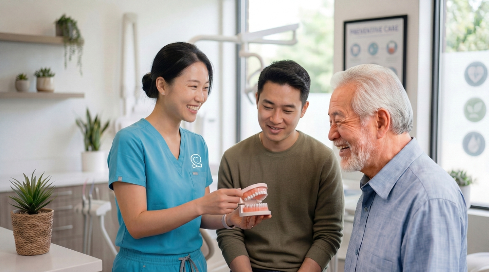
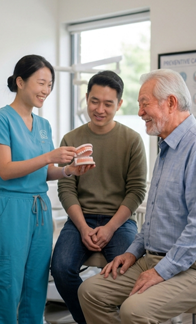
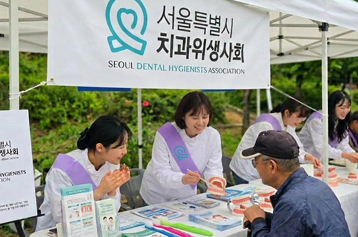
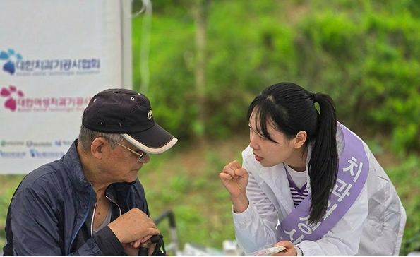

전문성을 연결하고
가능성을 확장합니다
서울특별시치과위생사회


치과위생사는 치과에서
스케일링 진료를 통해 많은
국민을 만나고 있습니다.
치과 의료 현장에서
사람들의 구강 상태를 살피고
올바른 구강 관리 방법을 안내하며
건강한 생활습관이 이어질 수 있도록 돕고 있습니다.
오늘도 치과위생사는
국민의 구강 건강을 지키는 구강건강 전문가로서 그 역할을 이어가고 있습니다.
스케일링 진료를 통해 많은
국민을 만나고 있습니다.
치과 의료 현장에서
사람들의 구강 상태를 살피고
올바른 구강 관리 방법을 안내하며
건강한 생활습관이 이어질 수 있도록 돕고 있습니다.
오늘도 치과위생사는
국민의 구강 건강을 지키는 구강건강 전문가로서 그 역할을 이어가고 있습니다.
-
112,450명대한민국 치과위생사 면허자수
-
19,383개대한민국 치과 수
-
1,580만 명매년 스케일링 받는 국민
치과위생사는
건강행동중재자입니다
건강행동중재자입니다
건강한 행동을 만들고
그 행동이 지속되도록 돕는
구강건강 전문가
그 행동이 지속되도록 돕는
구강건강 전문가
치과위생사는 치과에서 스케일링 진료를 수행하는 전문가로 잘 알려져 있습니다. 또한 다양한 분야에서 구강건강 전문가로서 치과위생사의 역할은 점차 확장되고 있습니다.
치과위생사는 구강 중심의 건강 상태를 살피고 맞춤형 건강 행동을 안내하며 국민 스스로 건강한 생활습관을 실천할 수 있도록 돕는 전문가입니다. 치과위생사는 국민의 건강한 일상을 함께 만들어 갑니다.
-
환자분의 생활습관을 함께 이야기하고 집에서 어떻게 관리하면 좋을지 설명할 때 치과위생사로서 가장 보람을 느낍니다— 치과위생사 박** (경력 3년)
-
치과진료에서는 치아와 잇몸 상태가 더 나빠지지 않도록 지속적인 관리가 중요합니다. 임플란트 수술 등 앞으로 진행될 치료 계획을 설명드리며, 환자분이 앞으로 스스로 관리할 수 있도록 상담하고 있습니다— 치과위생사 김** (경력 15년)
-
학교나 지역에서 구강건강 교육을 할 때, 작은 습관 하나가 평생의 건강을 바꿀 수 있다는 것을 많은 분들이 처음 알게 됩니다. 사람들이 스스로 건강을 관리 할 수 있도록 작은 건강 정보 하나까지도 정성을 다해 설명하고 있습니다— 치과위생사 권^^(경력 5년)
-
보건소에서 일하면서 느낀 것은 구강 건강은 정책과 시스템이 함께 움직일 때 더 많은 사람들에게 도움이 된다는 점입니다. 지역사회 구강 건강 정책의 근거가 될 수 있도록 다양한 구강보건사업을 개발하고 실행하고 있습니다.— 치과위생사 이** (경력 20년)
-
사람들이 자신의 구강 건강 상태를 쉽게 이해하고 스스로 건강을 관리할 수 있도록 인공지능을 개발하고 디지털 기술을 연구하고 있습니다— 치과위생사 박** (경력 7년)
-

정회원과 함께 만드는
치과 ESG지속가능한 치과 운영을 함께 실천하는 서울특별시치과위생사회 정회원 치과 -

서울특별시치과위생사회는 치과 임상 현장에서 실천 가능한 ESG 운영 모델을
정회원 치과와 함께 만들어 가고 있습니다. -
서울특별시
치과위생사치과위생사의 전문성을 연결하고 가능성을 확장합니다.
서울특별시치과위생사회는
치과위생사들의 다양한 현장 이야기와 경험, 생각을 함께 기록하고 나눕니다.